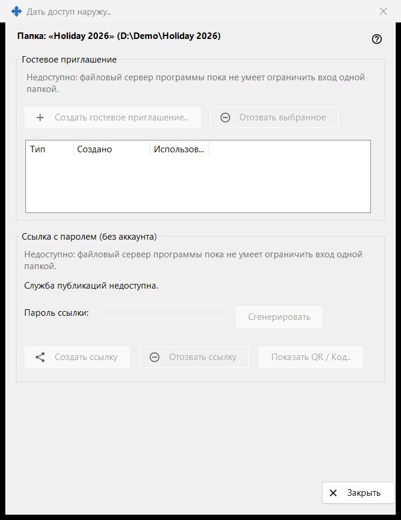
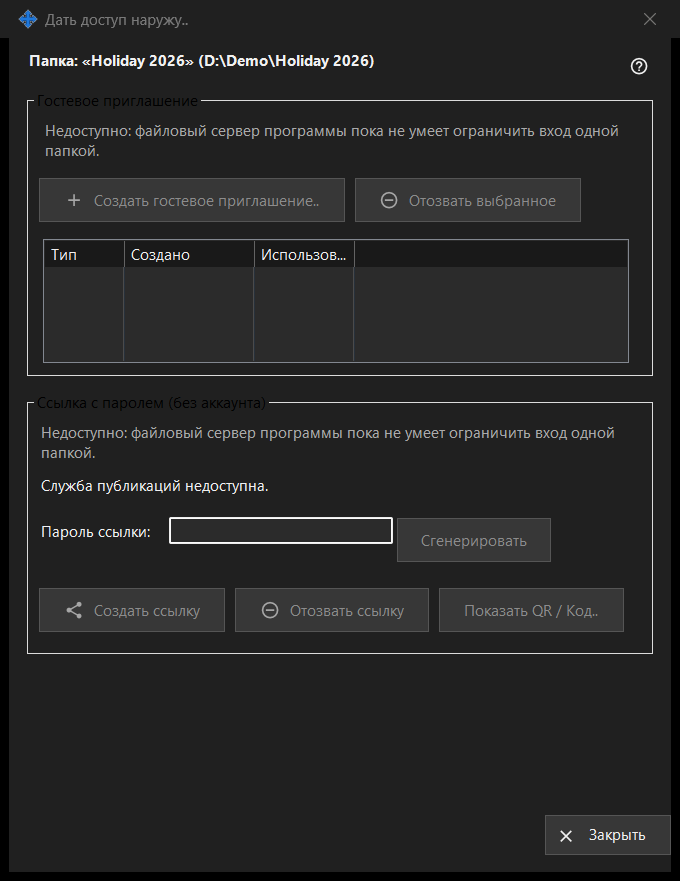

Дать доступ наружу
Назначение
Управляет доступом к одной раздаваемой папке для людей вне ваших устройств: гостевым приглашением или ссылкой с паролем, не требующей аккаунта. Окно открывается кнопкой «Дать доступ наружу..» в главном окне Share Manager для выбранной папки. В этой версии элементы создания нового доступа выключены, и окно показывает причину, а уже выданный доступ по-прежнему можно отозвать.


Порядок действий
- Прочитайте заголовок с именем и путём папки.
- В каждой группе прочитайте строку с причиной; пока она показана, ничего нового создать нельзя.
- Чтобы убрать доступ, выберите приглашение и нажмите «Отозвать выбранное» или нажмите «Отозвать ссылку».
- «Закрыть» (Escape) закрывает окно.
Элементы окна
Папка и состояние
Жирная строка называет папку и показывает её путь. Строка состояния внизу сообщает последний результат. Если служба публикаций не запущена, окно пишет «Служба публикаций недоступна.», а его кнопки выключены.
Гостевое приглашение
В группе есть «Создать гостевое приглашение..», «Отозвать выбранное» и список с колонками Тип, Создано и Использовано для гостевых приглашений этой папки. Отзыв убирает приглашение; папка и её файлы не удаляются.
Ссылка с паролем (без аккаунта)
Состояние - «Ссылка не создана.» или «Ссылка активна.» Поле «Пароль ссылки:» скрыто точками, а «Сгенерировать» заполняет его. «Создать ссылку» превращается в «Обновить ссылку», пока ссылка активна. «Отозвать ссылку» сначала спрашивает, потому что все активные сессии по ссылке завершаются. «Показать QR / Код..» показывает ссылку в виде кода.
Почему создание выключено
В каждой группе показана строка с причиной: файловый сервер программы не умеет ограничить вход одной папкой. Пока она видна, все элементы, создающие приглашения и ссылки, отключены. Отзыв уже выданного доступа зависит только от того, что существует.
Настройки менеджера · Настройки общего доступа SFTP · Настройки сервера обмена